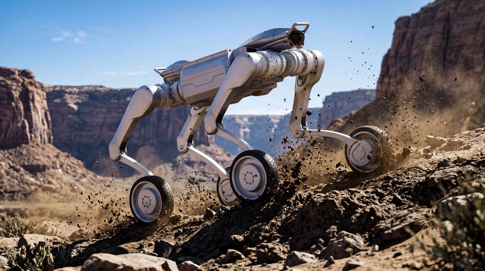
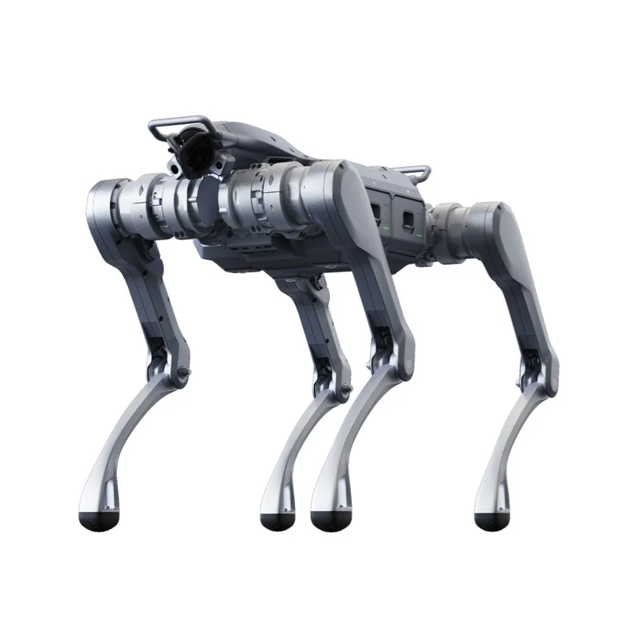

L'Unitree A2 Stellar Explorer è la piattaforma quadrupede industriale di Unitree. Stellar Explorer è il nome che compare nella pagina ufficiale; la sigla che identifica il prodotto è A2. Le versioni a listino sono A2 Standard, A2 Pro, A2-W Standard e A2-W Pro.
Unitree A2 Stellar Explorer: cos'è e cosa non è
La pagina ufficiale Unitree intitola il prodotto "Unitree A2" e aggiunge "Stellar Explorer". La stessa pagina elenca A2 e A2 Pro; l'A2-W è la configurazione con ruote alle estremità delle zampe. Nel listino Abra Robotics non esiste una voce "Stellar Explorer": le versioni sono A2 Standard, A2 Pro, A2-W Standard e A2-W Pro. La scheda ufficiale non ha una sezione dedicata a una variante "Explorer": dimensioni, pesi, sensori e autonomia sono quelli della famiglia A2. Chi cerca il prezzo parte dalla sigla.
Stellar Explorer o Stellar Hunter: cambia qualcosa?
La pagina ufficiale in cinese riporta 星际猎影; al lancio, il 5 agosto 2025, Unitree usava in inglese il nome Stellar Hunter, mentre la pagina inglese oggi usa Stellar Explorer. Cambia l'etichetta, non l'hardware. In un preventivo fai scrivere la sigla esatta e la configurazione, perché "Stellar Explorer" da solo non dice se hai davanti un A2, un A2 Pro, un A2-W o un A2-W Pro.
Quali sono le specifiche ufficiali dell'Unitree A2?
I dati seguenti vengono dalle schede ufficiali A2 e A2-W di Unitree, consultate il 20 ottobre 2026. Le autonomie dichiarate cambiano con carico, terreno e configurazione.
| Specifica | A2 e A2 Pro | A2-W e A2-W Pro |
|---|---|---|
| Dimensioni in piedi | 820 × 440 × 570 mm | 900 × 440 × 625 mm |
| Peso con batteria | circa 42 kg | circa 52 kg |
| Gradi di libertà | 12 | 16 |
| Carico in camminata continua | circa 25 kg, fino a circa 35 kg in condizioni ideali | circa 25 kg, fino a circa 35 kg in condizioni ideali |
| Carico statico | circa 100 kg | circa 100 kg |
| Velocità | 0-3,7 m/s, fino a circa 5 m/s | 0-3 m/s, fino a circa 6 m/s |
| Autonomia a vuoto | oltre 5 h, circa 20 km | oltre 3,5 h, circa 35 km |
| Autonomia con 25 kg | oltre 3 h, circa 12,5 km | oltre 1,5 h, circa 15 km |
| Protezione | IP56; A2 Pro IP56-IP67 con componenti principali IP67 | IP56; A2-W Pro IP56-IP67 con componenti principali IP67 |
| Sensori | 1 LiDAR e 1 camera HD; Pro 2 LiDAR anteriori e posteriori e 1 camera HD | 1 LiDAR e 1 camera HD; Pro 2 LiDAR anteriori e posteriori e 1 camera HD |
| Temperatura operativa | da -20 a 55 °C | da -20 a 55 °C |
La dotazione di calcolo è comune: CPU 8-core per le funzioni di piattaforma, Intel Core i7 per la programmazione con SDK, due batterie da 9.000 mAh (453,6 Wh ciascuna, 907,2 Wh in totale) con sostituzione a caldo. Le interfacce includono RS485, CAN, Gigabit Ethernet e USB-C. Unitree dichiara aggiornamenti OTA e supporto allo sviluppo software proprio.
Cosa dicono i numeri, in pratica
- Circa 25 kg in marcia è il carico continuo dichiarato, non il massimo in ogni condizione. I circa 35 kg citati da Unitree valgono "in condizioni ideali": vanno verificati con il baricentro e il fissaggio reali.
- I circa 100 kg statici non significano 100 kg trasportabili. Il robot può reggere quel peso da fermo, non camminare con 100 kg sulla schiena.
- IP56 indica protezione limitata alla polvere e resistenza ai getti d'acqua potenti, non all'immersione. Sull'A2 Pro i componenti principali sono dichiarati IP67.
- Due batterie hot-swap servono a sostituirne una senza spegnere il robot. La procedura va provata e spiegata a chi lavora sul campo.
Quanto costa l'Unitree A2 Stellar Explorer in Italia?
Stellar Explorer non è una voce di listino separata. Contano versione, sensori e accessori. Questi sono i prezzi End-User del listino pubblico Abra Robotics, IVA esclusa, spedizione e dazio in Italia inclusi. La pagina Unitree A2 raccoglie tutte le versioni e gli accessori.
| Versione | Prezzo IVA esclusa |
|---|---|
| A2 Standard | 30.814,49 € |
| A2-W Standard | 38.738,22 € |
| A2 Pro | 42.406,61 € |
| A2-W Pro | 49.743,39 € |
La fascia della famiglia A2 va da 30.814,49 € a 49.743,39 €. Il valore minimo è l'A2 Standard, il massimo l'A2-W Pro. Ogni ordine si conferma con un preventivo aggiornato, perché la configurazione finale può includere accessori.
Nel listino A2 gli accessori sono voci separate: batteria A2 a 1.467,36 €, telecomando con schermo G20 a 733,68 €, modulo UWB Companion a 1.173,88 €, dock di espansione di calcolo da 100 TOPS a 6.603,11 €. Sono prezzi IVA esclusa.
Meglio A2 o A2-W?
L'A2 cammina: 12 gradi di libertà, circa 42 kg, oltre 5 ore e circa 20 km a vuoto, gradini fino a 30 cm e pendenze fino a 45°. È la scelta per percorsi con scale, griglie, terreni irregolari e ambienti industriali.
L'A2-W ha ruote alle estremità delle zampe e 16 gradi di libertà. Pesa circa 52 kg, dichiara oltre 3,5 ore e circa 35 km a vuoto, fino a circa 6 m/s. Su asfalto, piazzali e corridoi lunghi è più efficiente e veloce; mantiene la capacità di superare gradini e ostacoli dichiarata da Unitree. Se il percorso è misto, con tratti lunghi e qualche scala, è la configurazione da valutare. Se predominano scale ripide, fango o terreni rotti, l'A2 resta più semplice.
In entrambi i casi la Pro aggiunge il secondo LiDAR e la protezione IP67 dei componenti principali. La Standard ha un LiDAR e IP56; GPS, 4G e modulo di inseguimento sono opzionali sulla Standard, mentre la Pro li include già.
Per quali applicazioni è adatto l'A2?
Unitree indica logistica, ispezione industriale ed emergenza e soccorso.
Ispezione di impianti e sottostazioni
Un A2 porta di serie camera HD e LiDAR e fino a circa 25 kg di carico utile in marcia. Serve una mappa, un percorso e un piano di gestione delle anomalie. Per il confronto con Go2, AS2 e B2 c'è la guida al quadrupede per ispezione industriale.
Se il percorso attraversa zone classificate, verifica una certificazione ATEX esplicita: nelle pagine ufficiali A2 non ne compare una. Montare un rilevatore di gas non rende il robot idoneo a quelle zone.
Informazioni generali, non consulenza legale. Per l'impiego in zone classificate serve una valutazione specifica di apparecchiatura e installazione.
Logistica interna ed esterna
Un carico di circa 25 kg in cammino continuo non sostituisce un carrello elevatore. L'A2 porta strumenti, campioni, ricambi o un piccolo payload tra due punti. L'A2-W è più adatto ai percorsi lunghi su fondo regolare. Se bastano 15 kg e IP54, l'AS2-X o AS2 Edu Standard costano meno dell'A2; per carichi oltre 40 kg Unitree propone il B2, in un'altra fascia di prezzo. Il confronto tra le taglie è nella pagina quadrupedi Unitree.
Emergenza, soccorso e sviluppo
Unitree cita anche emergenza e soccorso. Il robot porta sensori o materiali; non è un sistema di soccorso autonomo. Prima di un impiego operativo vanno definiti percorso, procedure e gestione delle anomalie. Per chi sviluppa, la piattaforma è aperta: CPU 8-core, Intel Core i7, SDK e interfacce consentono di collegare il robot a un software proprio o a un'unità di calcolo aggiuntiva.
Cosa controllare prima di comprare un A2?
- Sigla e versione: A2, A2 Pro, A2-W o A2-W Pro. La sigla determina sensori, protezione e prezzo.
- Sensori: un LiDAR o due, camera HD e luce frontale. Il secondo LiDAR cambia percezione e prezzo.
- Protezione: IP56 o IP67 sui componenti principali. Dipende da polvere, pioggia e lavaggi sul percorso.
- Batterie: due da 9.000 mAh (18.000 mAh totali); caricatore e scheda di ricarica sono voci separate. L'autonomia con carico è più bassa di quella a vuoto.
- Accessori: telecomando G20, modulo UWB, dock di calcolo da 100 TOPS. Sono voci separate dal robot.
- Ambiente: scale, gradini, pendenze, acqua, polvere, temperatura e zone ATEX.
- Software: chi scrive il codice, quali dati escono dal robot e come si integrano con il tuo sistema.
Prima dell'ordine conviene misurare percorso e carico reale. Per restringere la scelta tra le quattro versioni c'è il questionario Trova il robot giusto.


Domande frequenti
Unitree A2 Stellar Explorer è un modello diverso dall'A2?
No. Stellar Explorer è il nome con cui Unitree presenta oggi la piattaforma A2; le versioni a listino sono A2 Standard, A2 Pro, A2-W Standard e A2-W Pro.
Quanto costa l'Unitree A2 Stellar Explorer in Italia?
Non ha un prezzo separato. La famiglia A2 va da 30.814,49 € (A2 Standard) a 49.743,39 € (A2-W Pro) IVA esclusa, secondo il listino pubblico Abra Robotics.
Stellar Explorer e Stellar Hunter sono lo stesso robot?
Sì. Stellar Hunter è il nome usato da Unitree al lancio, il 5 agosto 2025; la pagina ufficiale inglese oggi usa Stellar Explorer. Cambia l'etichetta, non l'hardware.
Quanto carico porta l'Unitree A2?
Unitree dichiara circa 25 kg in camminata continua, fino a circa 35 kg in condizioni ideali, e circa 100 kg di carico statico.
Meglio A2 o A2-W per un percorso lungo?
Su asfalto e piazzali lunghi l'A2-W è più efficiente: dichiara oltre 3,5 ore e circa 35 km a vuoto. L'A2 resta la scelta per scale, terreni irregolari e percorsi misti.
L'Unitree A2 è certificato per zone ATEX?
Nelle pagine ufficiali Unitree non è dichiarata una certificazione ATEX per l'A2. Per le zone classificate serve una piattaforma con certificazione esplicita.
Fonti
- Unitree, pagina ufficiale A2 con il nome Stellar Explorer e la scheda tecnica: unitree.com/A2 (consultata il 20 ottobre 2026)
- Unitree, pagina ufficiale A2-W con specifiche della versione a ruote: unitree.com/A2-W (consultata il 20 ottobre 2026)
- Unitree, pagina ufficiale A2 in cinese, dove il nome è 星际猎影: unitree.com/cn/A2 (consultata il 20 ottobre 2026)
- Interesting Engineering, "Unitree's glass-shattering robot dog scales slopes, carries loads", 6 agosto 2025, che riporta il post di lancio Unitree del 5 agosto 2025 con il nome A2 Stellar Hunter: interestingengineering.com
- Unitree, pagina ufficiale AS2, carico in camminata e protezione IP54 delle versioni X ed EDU: unitree.com/As2 (consultata il 20 ottobre 2026)
- Unitree, pagina ufficiale B2, carico in camminata oltre 40 kg: unitree.com/b2 (consultata il 20 ottobre 2026)
- Prezzi: listino pubblico Abra Robotics, IVA esclusa, spedizione e dazio in Italia inclusi.